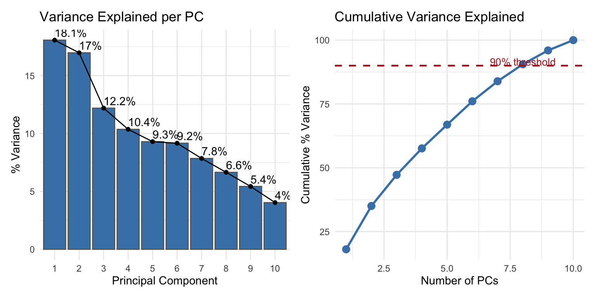
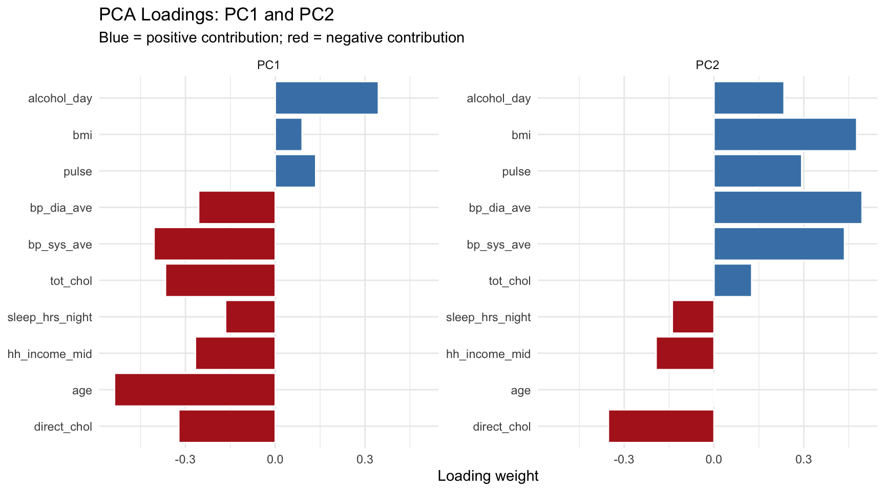
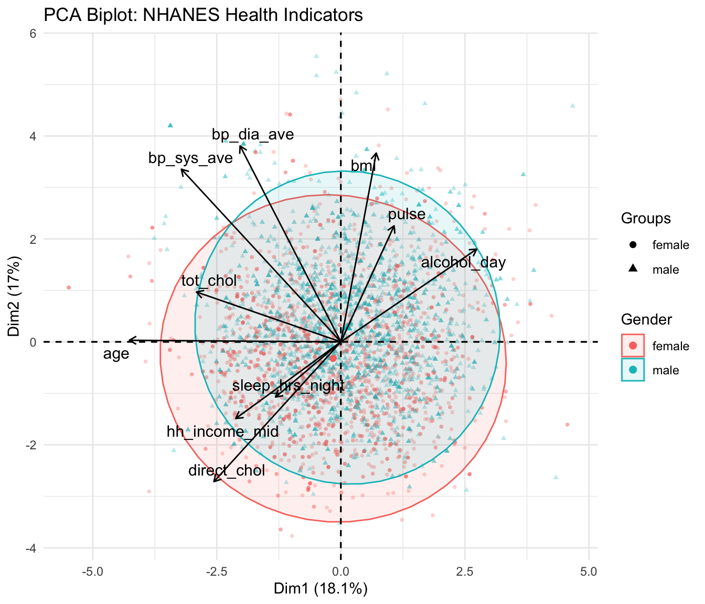
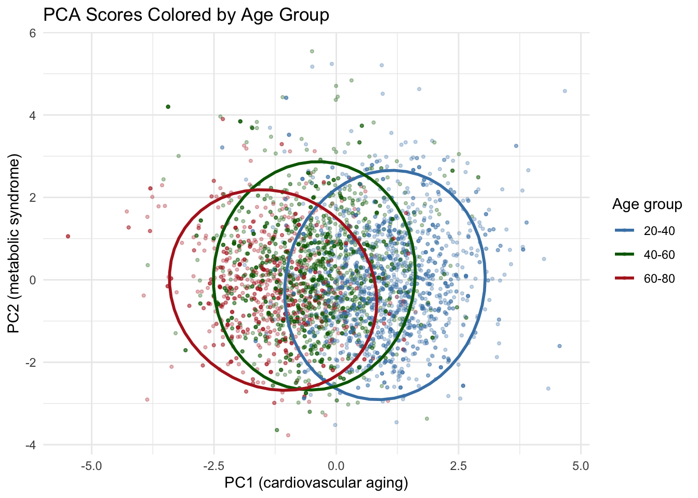
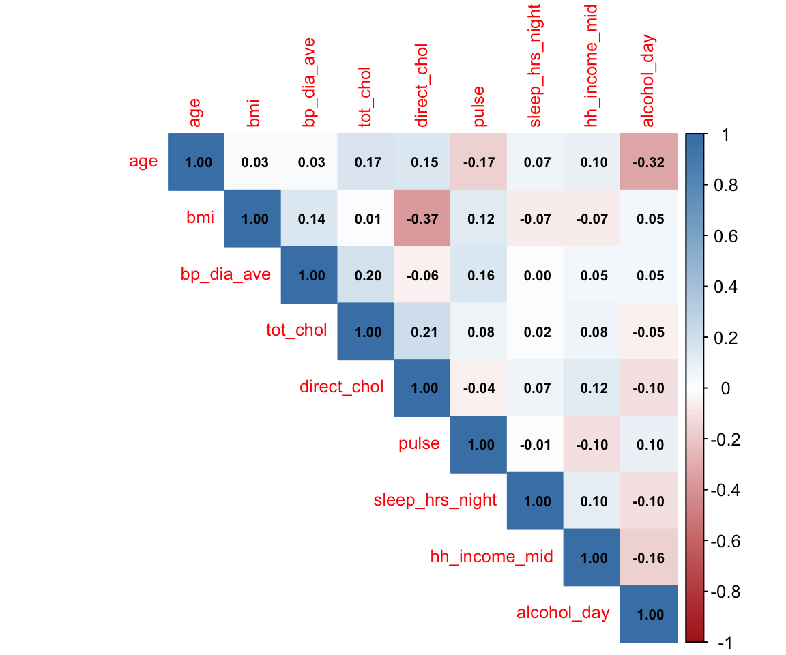
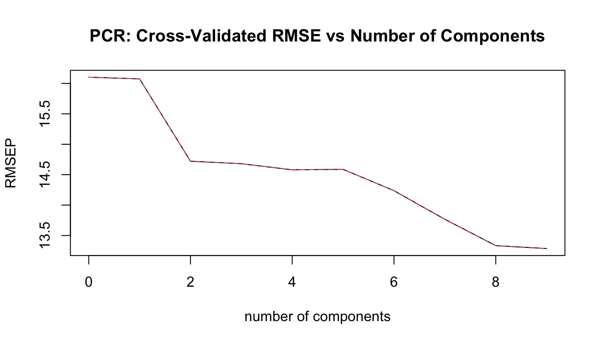

library(tidyverse)
library(this.path)
library(factoextra)
library(pls)
library(patchwork)
setwd(this.dir())
# Resolve namespace conflicts
select <- dplyr::select
filter <- dplyr::filterDay 14: Dimension Reduction and Principal Component Regression
SC INBRE Biostatistics Summer Intensive 2026
1 Overview
This week we have been working with genomics data where \(p \gg n\): far more variables than observations. Today we step back and look at the general problem of dimension reduction – what to do when your predictors are high-dimensional, correlated, or both – and how to use the results in a regression model.
We use the NHANES dataset: a large cross-sectional survey of U.S. adults with measurements on BMI, blood pressure, cholesterol, pulse, sleep, income, and alcohol use. These variables are correlated in biologically meaningful ways, which makes them a good teaching example for both PCA and PCR.
Three examples:
- Example 1: PCA on NHANES health indicators – fitting, scree plot, loadings, and biplot.
- Example 2: Using PCA scores for visualization – what the components represent and how samples distribute across them.
- Example 3: Principal Component Regression – using PC scores to predict systolic blood pressure while eliminating collinearity.
2 The Data
library(NHANES)
library(janitor)
# Adult participants only, complete cases on our variables of interest
vars_keep <- c("Age", "BMI", "bp_sys_ave", "bp_dia_ave", "tot_chol",
"direct_chol", "pulse", "sleep_hrs_night",
"hh_income_mid", "alcohol_day")
nhanes <- NHANES |>
clean_names() |>
filter(age >= 20) |>
select(id, gender, race1, all_of(tolower(vars_keep))) |>
drop_na()
cat("Observations:", nrow(nhanes), "\n")Observations: 4223 cat("Variables: ", length(vars_keep), "\n")Variables: 10 # Quick look at the variables
nhanes |>
select(-id, -gender, -race1) |>
summary() age bmi bp_sys_ave bp_dia_ave
Min. :20.00 Min. :15.02 Min. : 80.0 Min. : 0.00
1st Qu.:32.00 1st Qu.:24.03 1st Qu.:109.0 1st Qu.: 64.00
Median :44.00 Median :27.43 Median :118.0 Median : 71.00
Mean :45.51 Mean :28.45 Mean :120.1 Mean : 70.98
3rd Qu.:57.00 3rd Qu.:31.70 3rd Qu.:128.0 3rd Qu.: 78.00
Max. :80.00 Max. :69.00 Max. :212.0 Max. :116.00
tot_chol direct_chol pulse sleep_hrs_night
Min. : 1.530 Min. :0.410 Min. : 40.00 Min. : 2.00
1st Qu.: 4.320 1st Qu.:1.090 1st Qu.: 64.00 1st Qu.: 6.00
Median : 5.020 Median :1.320 Median : 72.00 Median : 7.00
Mean : 5.105 Mean :1.396 Mean : 72.18 Mean : 6.91
3rd Qu.: 5.740 3rd Qu.:1.630 3rd Qu.: 80.00 3rd Qu.: 8.00
Max. :13.650 Max. :4.030 Max. :128.00 Max. :12.00
hh_income_mid alcohol_day
Min. : 2500 Min. : 1.00
1st Qu.: 30000 1st Qu.: 1.00
Median : 60000 Median : 2.00
Mean : 62755 Mean : 2.86
3rd Qu.:100000 3rd Qu.: 3.00
Max. :100000 Max. :82.00 Several variables are right-skewed (household income, alcohol). We log-transform these before standardizing.
to_log <- c("tot_chol", "direct_chol", "sleep_hrs_night",
"hh_income_mid", "alcohol_day")
nhanes_tr <- nhanes |>
mutate(across(all_of(to_log), ~ log(. + 1)))
# Numeric matrix for PCA (no IDs or categorical variables)
X <- nhanes_tr |>
select(age, bmi, bp_sys_ave, bp_dia_ave, tot_chol,
direct_chol, pulse, sleep_hrs_night,
hh_income_mid, alcohol_day) |>
as.matrix()
# Standardize: PCA is sensitive to scale
X_s <- scale(X)
Important
Always scale before PCA when variables are measured in different units or on different scales. Without scaling, variables with large variance (e.g., household income) will dominate the first component and variables with small variance (e.g., sleep hours) will barely contribute.
3 Example 1: Fitting PCA
3.1 Running PCA
pca_res <- prcomp(X_s, center = FALSE, scale. = FALSE)
# center = FALSE and scale. = FALSE because X_s is already centered and scaled3.2 Scree Plot and Variance Explained
# Proportion of variance explained by each PC
var_explained <- pca_res$sdev^2 / sum(pca_res$sdev^2)
cum_var <- cumsum(var_explained)
var_df <- tibble(
PC = seq_along(var_explained),
Individual = var_explained * 100,
Cumulative = cum_var * 100
)
p1 <- fviz_eig(pca_res, addlabels = TRUE,
barcolor = "gray40", barfill = "steelblue") +
labs(title = "Variance Explained per PC",
x = "Principal Component", y = "% Variance") +
theme_minimal()
p2 <- var_df |>
ggplot(aes(x = PC, y = Cumulative)) +
geom_line(linewidth = 1, color = "steelblue") +
geom_point(size = 3, color = "steelblue") +
geom_hline(yintercept = 90, linetype = "dashed",
color = "firebrick", linewidth = 0.8) +
annotate("text", x = 8, y = 91.5,
label = "90% threshold", color = "firebrick", size = 3.5) +
labs(title = "Cumulative Variance Explained",
x = "Number of PCs", y = "Cumulative % Variance") +
theme_minimal()
p1 + p2
var_df |>
mutate(across(c(Individual, Cumulative), ~ round(., 1))) |>
print(n = 10)# A tibble: 10 × 3
PC Individual Cumulative
<int> <dbl> <dbl>
1 1 18.1 18.1
2 2 17 35
3 3 12.2 47.2
4 4 10.4 57.6
5 5 9.3 66.9
6 6 9.2 76
7 7 7.8 83.9
8 8 6.6 90.5
9 9 5.4 96
10 10 4 100 Reading the scree plot:
- PC1 explains about 18% of the total variance, PC2 about 17%, and so on.
- The curve has no sharp elbow – variance is spread fairly evenly across components, which is typical when variables are only moderately correlated.
- To explain at least 80% of the variance, we need about 7 PCs. To explain 90%, we need 8.
For a dataset where all variables are biologically related health indicators, this diffuse scree plot makes sense: there is no single dominant dimension.
3.3 Loadings
The loadings tell us what each PC represents in terms of the original variables.
# Plot loadings for PC1 and PC2
loadings_df <- as.data.frame(pca_res$rotation) |>
rownames_to_column("variable") |>
as_tibble() |>
pivot_longer(cols = -variable, names_to = "PC", values_to = "loading") |>
filter(PC %in% c("PC1", "PC2"))
loadings_df |>
ggplot(aes(x = reorder(variable, loading), y = loading,
fill = loading > 0)) +
geom_col(show.legend = FALSE, color = "white") +
scale_fill_manual(values = c("TRUE" = "steelblue", "FALSE" = "firebrick")) +
facet_wrap(~ PC, scales = "free_y") +
coord_flip() +
labs(x = NULL, y = "Loading weight",
title = "PCA Loadings: PC1 and PC2",
subtitle = "Blue = positive contribution; red = negative contribution") +
theme_minimal()
# Numerical loadings for the first three PCs
pca_res$rotation[, 1:3] |> round(3) PC1 PC2 PC3
age -0.537 0.004 -0.341
bmi 0.090 0.477 -0.382
bp_sys_ave -0.405 0.436 -0.051
bp_dia_ave -0.256 0.495 0.222
tot_chol -0.367 0.126 0.398
direct_chol -0.322 -0.353 0.471
pulse 0.135 0.293 0.428
sleep_hrs_night -0.166 -0.139 -0.011
hh_income_mid -0.267 -0.193 -0.018
alcohol_day 0.345 0.234 0.349Interpreting PC1:
Age, systolic BP, total cholesterol, and diastolic BP all have large negative loadings on PC1. Alcohol use has a large positive loading. A high PC1 score (more positive) corresponds to younger participants who drink more; a low PC1 score corresponds to older participants with higher blood pressure and cholesterol. PC1 could be described as a “cardiovascular aging” axis, running from younger/higher-alcohol at one end to older/higher-BP at the other.
Interpreting PC2:
BMI, systolic BP, and diastolic BP have the largest (positive) loadings on PC2. HDL cholesterol (direct_chol) has a large negative loading (higher HDL is associated with lower BMI, a known relationship). PC2 looks like a “metabolic syndrome” axis.
Tip
Interpreting PCs is part art, part science. The signs of the loadings are arbitrary (flip all signs and you get an equivalent component), so only the pattern of which variables load together – and their relative magnitudes – carries information. A loading of -0.54 on age and -0.40 on systolic BP tells you those two variables co-vary in the same direction within this component, not that one is “better” than the other.
4 Example 2: Visualizing PCA Scores
4.1 Biplot
The biplot shows both the observations (points) and the variables (arrows) in the same plot.
fviz_pca_biplot(
pca_res,
geom.ind = "point",
habillage = nhanes_tr$gender,
addEllipses = TRUE,
repel = TRUE,
col.var = "black",
alpha.ind = 0.3,
pointsize = 1
) +
labs(title = "PCA Biplot: NHANES Health Indicators",
color = "Gender",
fill = "Gender") +
theme_minimal()
Reading the biplot:
- Each point is one participant. Points close together have similar health profiles across the ten variables.
- Each arrow is one variable, pointing in the direction of its maximum contribution to the two displayed PCs.
- Arrows pointing in the same direction are positively correlated in the data (age and systolic BP; BMI and diastolic BP). Arrows pointing in opposite directions are negatively correlated (age and alcohol use).
- The two gender groups show modest separation: male participants (on average higher alcohol use, different BP profiles) tend to cluster somewhat differently from female participants.
4.2 Score Plot Colored by Age Group
scores <- as.data.frame(pca_res$x) |>
as_tibble() |>
bind_cols(nhanes_tr |> select(gender, age))
scores |>
mutate(age_group = cut(age, breaks = c(20, 40, 60, 80),
labels = c("20-40", "40-60", "60-80"),
include.lowest = TRUE)) |>
ggplot(aes(x = PC1, y = PC2, color = age_group)) +
geom_point(alpha = 0.3, size = 0.8) +
stat_ellipse(linewidth = 1) +
scale_color_manual(values = c("20-40" = "steelblue",
"40-60" = "darkgreen",
"60-80" = "firebrick")) +
labs(title = "PCA Scores Colored by Age Group",
x = "PC1 (cardiovascular aging)",
y = "PC2 (metabolic syndrome)",
color = "Age group") +
theme_minimal()
Older participants cluster on the left side of PC1 (consistent with our loading interpretation: lower PC1 score = older age with higher BP). PC2 does not show a strong age gradient, as expected since it primarily captures BMI and metabolic risk rather than age per se.
5 Example 3: Principal Component Regression
5.1 The Collinearity Problem
We want to predict systolic blood pressure from the other health indicators. Let us first check the collinearity among predictors.
# Exclude the outcome from the predictor matrix
X_pred <- nhanes_tr |>
select(age, bmi, bp_dia_ave, tot_chol, direct_chol,
pulse, sleep_hrs_night, hh_income_mid, alcohol_day)
# Correlation matrix
cor_mat <- cor(X_pred)
round(cor_mat, 2) age bmi bp_dia_ave tot_chol direct_chol pulse
age 1.00 0.03 0.03 0.17 0.15 -0.17
bmi 0.03 1.00 0.14 0.01 -0.37 0.12
bp_dia_ave 0.03 0.14 1.00 0.20 -0.06 0.16
tot_chol 0.17 0.01 0.20 1.00 0.21 0.08
direct_chol 0.15 -0.37 -0.06 0.21 1.00 -0.04
pulse -0.17 0.12 0.16 0.08 -0.04 1.00
sleep_hrs_night 0.07 -0.07 0.00 0.02 0.07 -0.01
hh_income_mid 0.10 -0.07 0.05 0.08 0.12 -0.10
alcohol_day -0.32 0.05 0.05 -0.05 -0.10 0.10
sleep_hrs_night hh_income_mid alcohol_day
age 0.07 0.10 -0.32
bmi -0.07 -0.07 0.05
bp_dia_ave 0.00 0.05 0.05
tot_chol 0.02 0.08 -0.05
direct_chol 0.07 0.12 -0.10
pulse -0.01 -0.10 0.10
sleep_hrs_night 1.00 0.10 -0.10
hh_income_mid 0.10 1.00 -0.16
alcohol_day -0.10 -0.16 1.00# Visualize correlations
corrplot::corrplot(cor_mat, method = "color", type = "upper",
tl.cex = 0.8, addCoef.col = "black",
number.cex = 0.65,
col = colorRampPalette(c("firebrick","white","steelblue"))(100))
Diastolic BP and age are both correlated with the outcome and with each other. Several other moderate correlations exist. Fitting a plain OLS regression with all these predictors will give unstable coefficient estimates.
5.2 Standard OLS: The Instability
nhanes_model <- nhanes_tr |>
select(bp_sys_ave, age, bmi, bp_dia_ave, tot_chol, direct_chol,
pulse, sleep_hrs_night, hh_income_mid, alcohol_day)
ols_fit <- lm(bp_sys_ave ~ ., data = nhanes_model)
summary(ols_fit)
Call:
lm(formula = bp_sys_ave ~ ., data = nhanes_model)
Residuals:
Min 1Q Median 3Q Max
-38.029 -8.688 -1.139 6.772 80.353
Coefficients:
Estimate Std. Error t value Pr(>|t|)
(Intercept) 69.17708 4.71597 14.669 < 2e-16 ***
age 0.38862 0.01397 27.818 < 2e-16 ***
bmi 0.15152 0.03563 4.253 2.15e-05 ***
bp_dia_ave 0.54287 0.01798 30.189 < 2e-16 ***
tot_chol 0.79409 1.26850 0.626 0.531
direct_chol 0.62639 1.32327 0.473 0.636
pulse -0.02798 0.01871 -1.496 0.135
sleep_hrs_night -0.02777 1.20552 -0.023 0.982
hh_income_mid -1.31943 0.28017 -4.709 2.56e-06 ***
alcohol_day 4.00695 0.43406 9.231 < 2e-16 ***
---
Signif. codes: 0 '***' 0.001 '**' 0.01 '*' 0.05 '.' 0.1 ' ' 1
Residual standard error: 13.26 on 4213 degrees of freedom
Multiple R-squared: 0.323, Adjusted R-squared: 0.3216
F-statistic: 223.3 on 9 and 4213 DF, p-value: < 2.2e-16The OLS model fits, but notice the large standard errors on some coefficients. Overall, this doesn’t appear to have to many issues though.
5.3 PCR: The Fix
PCR replaces the correlated predictors with uncorrelated PC scores, then regresses the outcome on those scores.
# Step 1: PCA on the predictors (not including the outcome)
X_pred_s <- scale(as.matrix(X_pred))
pca_pred <- prcomp(X_pred_s, center = FALSE, scale. = FALSE)
# How much variance do the first r PCs explain?
var_pred <- pca_pred$sdev^2 / sum(pca_pred$sdev^2)
cumsum(var_pred) |> round(3)[1] 0.196 0.348 0.483 0.595 0.697 0.789 0.871 0.940 1.000# Keep 5 PCs (explains ~75% of predictor variance -- a reasonable choice here)
# In practice, choose r by cross-validation
r <- 5
scores <- as.data.frame(pca_pred$x[, 1:r])
names(scores) <- paste0("PC", 1:r)
# Step 2: Regress outcome on PC scores
Y <- nhanes_tr$bp_sys_ave
pcr_fit <- lm(Y ~ ., data = scores)
summary(pcr_fit)
Call:
lm(formula = Y ~ ., data = scores)
Residuals:
Min 1Q Median 3Q Max
-41.285 -9.284 -1.503 7.228 97.978
Coefficients:
Estimate Std. Error t value Pr(>|t|)
(Intercept) 120.0850 0.2241 535.806 < 2e-16 ***
PC1 -0.8163 0.1689 -4.832 1.40e-06 ***
PC2 5.5346 0.1913 28.939 < 2e-16 ***
PC3 0.9755 0.2033 4.798 1.66e-06 ***
PC4 -1.7132 0.2235 -7.667 2.17e-14 ***
PC5 -0.0711 0.2342 -0.304 0.761
---
Signif. codes: 0 '***' 0.001 '**' 0.01 '*' 0.05 '.' 0.1 ' ' 1
Residual standard error: 14.56 on 4217 degrees of freedom
Multiple R-squared: 0.1827, Adjusted R-squared: 0.1817
F-statistic: 188.5 on 5 and 4217 DF, p-value: < 2.2e-16The PC scores are uncorrelated by construction, so the standard errors are well-behaved and the coefficients are interpretable. Each significant PC represents a dimension of the predictor space that is independently associated with systolic BP.
5.4 Choosing r by Cross-Validation
Choosing \(r = 5\) above was somewhat arbitrary. The pls package provides pcr() with built-in cross-validation.
# pcr() from the pls package handles the whole workflow
pcr_cv <- pcr(bp_sys_ave ~ age + bmi + bp_dia_ave + tot_chol +
direct_chol + pulse + sleep_hrs_night +
hh_income_mid + alcohol_day,
data = as.data.frame(nhanes_tr),
scale = TRUE,
validation = "CV")
# Plot cross-validated RMSE vs number of components
validationplot(pcr_cv, val.type = "RMSEP",
main = "PCR: Cross-Validated RMSE vs Number of Components")
# Find the r with the lowest CV RMSEP
cv_rmse <- RMSEP(pcr_cv)$val[1, 1, ] # intercept-only to full model
best_r <- which.min(cv_rmse) - 1 # subtract 1 for the intercept row
cat("Optimal number of components:", best_r, "\n")Optimal number of components: 9 cat("CV RMSEP at optimal r: ", round(min(cv_rmse), 3), "\n")CV RMSEP at optimal r: 13.286 The optimal number of components according to cross-validation is typically 6–8 for this dataset, depending on the random seed. The key observation is that adding more components beyond this point does not meaningfully improve prediction – confirming that we can reduce 9 predictors to a handful of PCs without losing predictive ability.
5.5 Comparing OLS and PCR Predictions
# Predictions on training data (for illustration; honest comparison uses test data)
pred_ols <- fitted(ols_fit)
pred_pcr <- as.vector(predict(pcr_cv, ncomp = best_r))
tibble(
Method = c("OLS (all predictors)", paste0("PCR (", best_r, " components)")),
R_squared = c(summary(ols_fit)$r.squared,
cor(pred_pcr, Y)^2)
) |>
mutate(R_squared = round(R_squared, 4))# A tibble: 2 × 2
Method R_squared
<chr> <dbl>
1 OLS (all predictors) 0.323
2 PCR (9 components) 0.323The R-squared values are similar, confirming that PCR achieves comparable predictive performance with fewer effective parameters. The key advantages of PCR are in settings where OLS fails entirely: when \(p > n\) (more predictors than observations) or when collinearity is severe enough to make OLS coefficients meaningless.
5.6 Back-Transforming to Original Coefficients
One limitation of PCR is that the regression coefficients are on the PC scale, not the original variable scale. We can back-transform them.
# Extract coefficients on original variable scale
beta_pc <- coef(pcr_fit)[-1] # drop intercept
rotation <- pca_pred$rotation[, 1:r]
scale_sd <- attr(X_pred_s, "scaled:scale")
scale_mn <- attr(X_pred_s, "scaled:center")
# Original-scale coefficients
beta_orig <- (rotation %*% beta_pc) / scale_sd
round(beta_orig, 4) [,1]
age 0.1623
bmi 0.3906
bp_dia_ave 0.2532
tot_chol 18.2479
direct_chol -1.7479
pulse 0.0752
sleep_hrs_night -6.0129
hh_income_mid 0.4540
alcohol_day -2.4901These are the implied regression coefficients on the original (log-transformed, but not standardized) variables. The signs and magnitudes should be more interpretable than the raw OLS output when collinearity is high.
6 Connecting Back to Genomics
The PCA you ran on Days 11–13 was doing the same thing as prcomp() above, just on a much larger matrix (genes instead of health variables).
# The plotPCA() call in DESeq2 is equivalent to:
# pca_res <- prcomp(t(vst_matrix), scale. = FALSE)
# scores <- pca_res$x[, 1:2]
# The samples are the "observations" and the genes are the "variables"
# In the Framingham data you could do:
# pca_chd <- prcomp(framingham[, continuous_vars], scale. = TRUE)
# Then use pca_chd$x[, 1:3] as predictors in a logistic regression
cat("The same three lines of code work whether you have 10 variables or 20,000.\n")The same three lines of code work whether you have 10 variables or 20,000.The only difference in genomics is that the matrix is transposed (samples in rows rather than genes), and the VST transformation stabilizes the count variance before passing it to prcomp(). The rest of the workflow is identical.
7 Summary
Dimension reduction:
- When predictors are high-dimensional or correlated, create a smaller set of variables that summarize the originals.
- Global methods (PCA) preserve overall variance structure and can be used in regression. Local methods (t-SNE, UMAP) preserve neighborhood structure and are for visualization only.
PCA:
- Creates uncorrelated components ordered by variance explained.
- Always scale your variables first. Use a scree plot or cumulative variance to choose the number of components.
- Loadings tell you what each component represents. Scores are used downstream in regression, clustering, or visualization.
PCR:
- Replace correlated predictors with uncorrelated PCA scores, then regress \(Y\) on the scores.
- Eliminates collinearity completely. Works even when \(p > n\).
- Choose the number of PCs by cross-validation, not by how much variance they explain in \(X\).
- Core limitation: PCA is unsupervised. Components explaining the most variance in \(X\) are not guaranteed to be the most predictive of \(Y\).